La propriété position
La propriété position sert à contrôler le placement d’un élément sur la page.
Les valeurs principales
static
- Valeur par défaut.
- L’élément reste dans le flux normal.
- Rarement utilisé explicitement, sauf pour rétablir un comportement normal.
Syntaxe
position:static;
relative
- L’élément reste dans le flux, mais on peut le décaler avec
top,right,bottom,left. - Les autres éléments gardent leur place comme si rien n’avait bougé.
- Sert de repère pour un enfant en
absolute. - Donne accès à la propriété
z-index.
Syntaxe
position:relative;
Dans l'exemple ci-dessous, l'élément strong est en position relative. On utilise les propriétés top, right, bottom ou left jumelées à des valeurs en px ou % pour le positionner:
Exemple
See the Pen c08-pos-01 by Frédéric Lacroix (@frlacroix) on CodePen.
absolute
- L’élément est retiré du flux et devient indépendant des éléments HTML qui le côtoient.
- Positionné par rapport au premier ancêtre ayant une
positionautre questatic. - Si aucun ancêtre n’est positionné, il se place par rapport à la page.
- Ne conserve pas sa largeur par défaut (ne fait plus 100%).
Syntaxe
position:absolute;
Il est capital de noter qu'un élément bénéficiant d'une position absolue ne bougera pas de sa position initiale tant que l'une des propriétés top, bottom, left ou right n'a pas été précisée; il s'agit d'ailleurs là d'un comportement appliquable à toutes les positions :
Exemple
See the Pen c08-pos-03 by Frédéric Lacroix (@frlacroix) on CodePen.
fixed
- Lorsque son positionnement est précisé (
top,right,bottom,left), l’élément devient fixé par rapport à la fenêtre du navigateur. - Il ne bouge pas quand on fait défiler la page.
- Typiquement utilisé pour des menus persistants ou des boutons flottants.
Syntaxe
position:fixed;
Exemple 1: le texte jaune reste fixe même lorsqu'on défile
See the Pen c08-pos05 by Frédéric Lacroix (@frlacroix) on CodePen.
Exemple 2: barre de navigation fixée
See the Pen c08-pos04 by Frédéric Lacroix (@frlacroix) on CodePen.
z-index
La propriété z-index contrôle l’ordre d’empilement des éléments quand ils se chevauchent.
Elle agit sur l’axe z, c’est-à-dire la profondeur :
- plus la valeur est élevée, plus l’élément apparaît « au-dessus » des autres;
- plus la valeur est faible, plus il est « en dessous ».
Comportement par défaut
- Quand plusieurs éléments se chevauchent, l’ordre suit celui du code HTML : le premier est en arrière-plan, le dernier en avant-plan.
- Cet ordre naturel ne se voit que si les éléments se superposent partiellement.
Usage de z-index
- z-index permet de modifier cet ordre et de forcer un élément à passer devant ou derrière les autres.
- Nécessite que l’élément ait une
positiondifférente destatic(relative,absoluteoufixed).
Exemple typique
- Forcer une barre de navigation fixe à rester toujours au premier plan (
z-index: 100). - Superposer un texte par-dessus une image.
Exemple
See the Pen c06-pos06 by Frédéric Lacroix (@frlacroix) on CodePen.
Propriété position
Créez la feuille de style de ce "pen" en utilisant uniquement des sélecteurs de classe. (Voir en classe pour les directives.):
- Ouvrez dans Codepen et faites-vous une copie.
- Superposez le nom de l'item et son prix sur l'image en utlisant la propriété position. (Voir en classe pour les directives.)
- Remarquez le lien qui enblobe à la fois l'image, le nom de l'item et le prix: effectuez sa mise en forme.
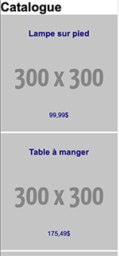
See the Pen c06-1/3-position absolute+design réactif by Frédéric Lacroix (@frlacroix) on CodePen.
Le design réactif et l'approche « mobile d'abord »
Un site web doit s’adapter à la taille de l’écran de l’utilisateur. L'approche Mobile d'abord (ou Mobile first) repose sur ces fondements :
- concevoir le site d’abord pour les appareils les plus simples (petits écrans, navigateurs limités) avec un code minimal et robuste;
- ajouter ensuite, couche par couche, des styles supplémentaires pour les écrans plus larges et les appareils plus puissants.
Conséquences pratiques
- Les styles de base ciblent en priorité les téléphones.
- À mesure que l’écran s’élargit, on introduit des ajustements avec des requêtes médias (
@media). - Chaque point de rupture (breakpoint) adapte la mise en page
(par exemple : une colonne → deux colonnes → trois colonnes).
Exemple d’application
Un répertoire de photos dont l'affichage s'adapte selon la taille de l'écran:
- sur mobile, par défaut (écran de largeur étroite): une colonne;
- sur tablette (écran de largeur moyenne): deux colonnes;
- sur ordinateur de table (écran large): trois colonnes.
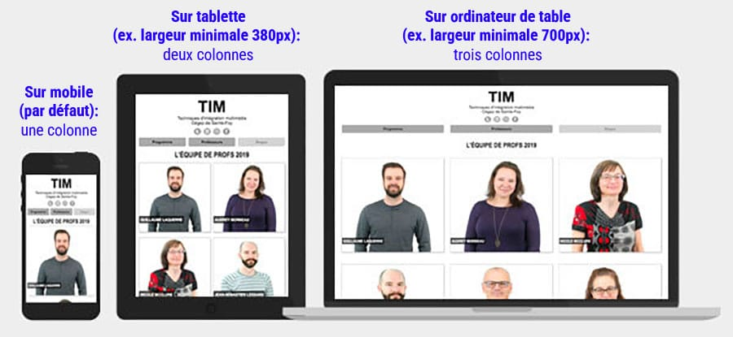
Comment y arriver sans dupliquer les contenus?
La requête media : @media
On y arrive en ajoutant des règles de style conditionnelles.
La condition dans cet exemple est fondée sur la largeur de l'écran.
Ainsi, à partir d'une certaine largeur d'écran, la fonction @media permet de modifier la valeur d'une propriété (ou d'ajouter de nouvelles déclarations), comme ceci :
Code
.catalogue { display: flex; flex-direction: column; } @media (min-width:700px) { .catalogue { flex-direction: row; } }
Résultat
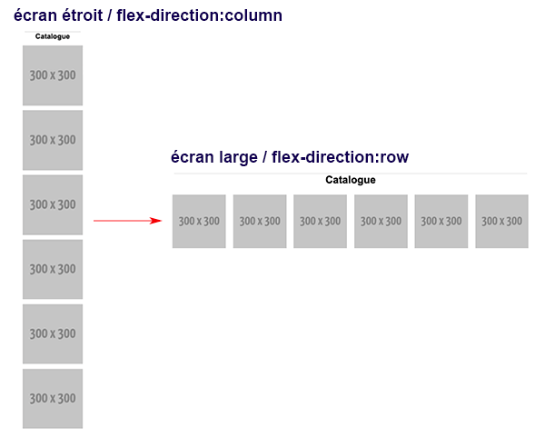
Ajoutez cette meta dans la partie head du document HTML afin que les fonctions @media soient interprétées correctement:
<meta name="viewport" content="width=device-width, initial-scale=1.0">
La requête media : @media
- Reprenez le Codepen précédent.
- Complétez la feuille de style de ce pen en utilisant uniquement des sélecteurs de classe. (Voir en classe pour les directives.)
- À l'aide de la fonction
@media, rendez réactive la disposition des six items:- Les six items forment au départ une colonne.
- À mesure que l'écran s'élargit, ces items doivent former des rangées de deux items, puis, enfin, des rangées de trois items.
- N'oubliez pas de sauvegarder votre pen pour une utilisation ultérieure.
(par défaut)
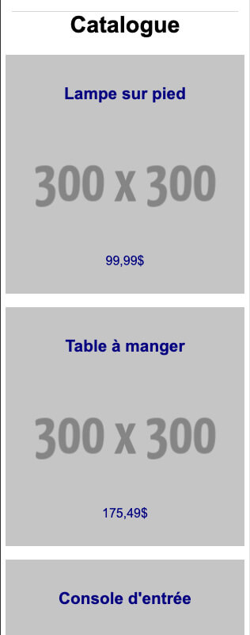
(largeur > 380 px)
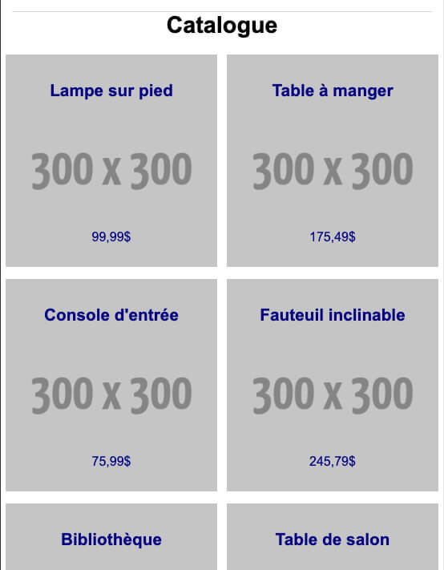
(largeur > 700 px)
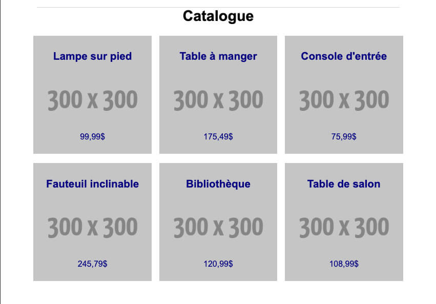
Activités d'évaluation
Travail pratique 2 (10%)
Le TP2 a pour objectif d'expérimenter la propriété CSS position et le web réactif.
Sources
Téléchargez le dossier TP2.zip.
Décompressez ce dossier sur votre poste et renommez-le adéquatement avec votre numéro de groupe et votre nom.
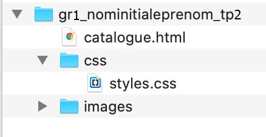
Échéancier
Remettez l'archive zippée sur LÉA au plus tard le lundi 19 octobre à 8h.
Grille de correction
Consultez la grille de correction pour le travail . Référéz-vous à cette grille pour vérifier votre travail avant de le remettre sur LÉA.
TP2: Travail à faire
Visionnez un exemple de résultat final attendu
- Ouvrez le dossier de travail du tp2 dans VSC.
- Dans le document
catalogue.html:- Inscrivez votre nom dans la balise correspondante de la ligne 11.
- Intégrez le favicon dans la page: le fichier image se nomme favicon_32x32.png.
Référez-vous à la leçon 4 pour l'intégrer correctement .
- Dans le document
styles.css:- Au tout début de la feuille de style, ajoutez le code
@charset "UTF-8";. - À la suite de ce code, ajoutez le code
@import...de Google Fonts afin d'importer la police de caractères qui se nomme "Arimo". - Ensuite, ajoutez les règles de style de réinitialisation habituelles :
- Assurez-vous que la propriété
font-familycorrespond à la Google Font. - Effectuez la mise en forme du menu de navigation réactif de la page web à l'aide des directives données en classe.
- Reproduisez la mise en forme du catalogue en observant les images de maquette affichées plus bas.
- Effectuez une mise en forme fluide, basée sur le principe du 'Mobile d'abord';
- Créez des requêtes media pour la version '2 colonnes' (> 380px);
- Créez une requête media pour la version '3 colonnes' (> 700px);
- Établissez une largeur maximale de 800px pour le catalogue.
- Créez un pied de page flexible.
- Créez les règles de style nécessaires en vous inspirant des travaux formatifs effectués durant le cours.
- N'utilisez que des sélecteurs de classe dans vos règles de style. Les attributs
classà utiliser sont déjà existants dans le document HTML, n'ajoutez pas de nouvelles classes. - Mettez votre feuille de style en ordre.
- Insérez des commentaires dans votre feuille de style afin de vous y retrouver plus facilement.
Réinitialisation 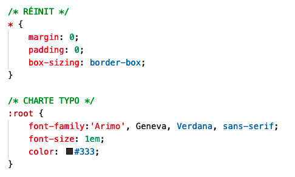
- Au tout début de la feuille de style, ajoutez le code
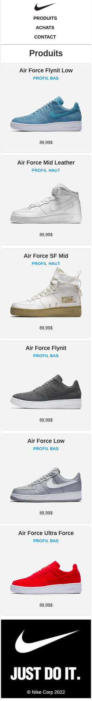
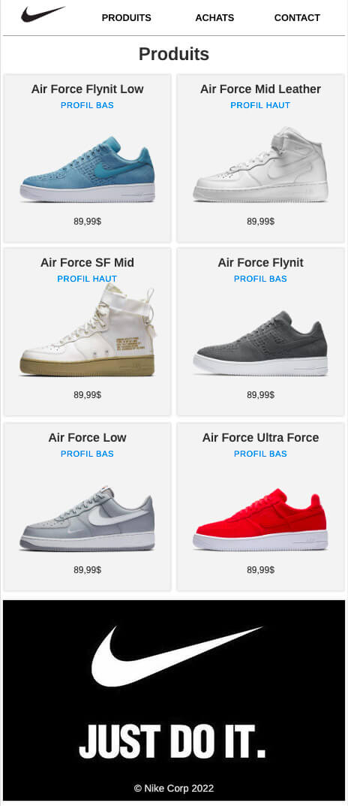
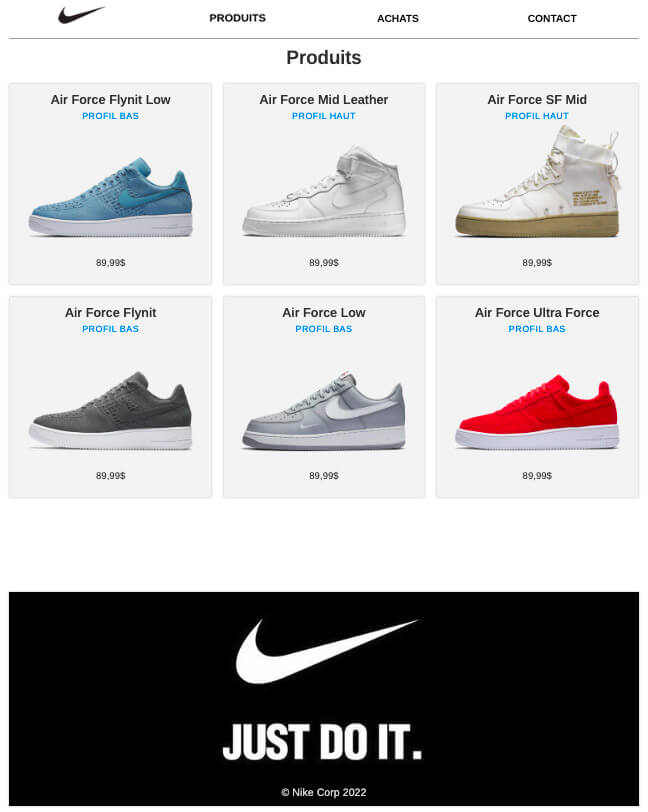
À faire avant la prochaine leçon
- Finaliser le TP et le remettre sur LÉA au plus tard vendredi 8h.
- Lire la documentation et réaliser les travaux formatifs de la leçon 8.
- Noter les questions qui vous sont venues pendant votre lecture.